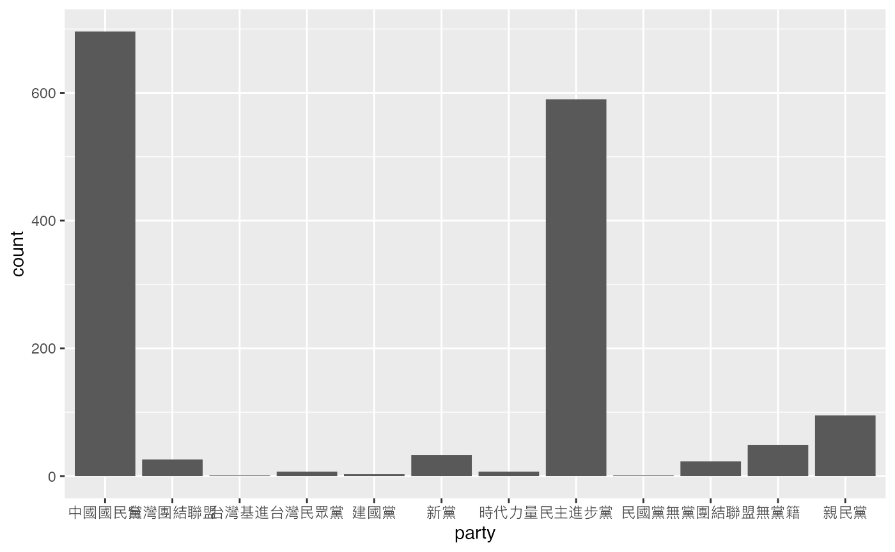
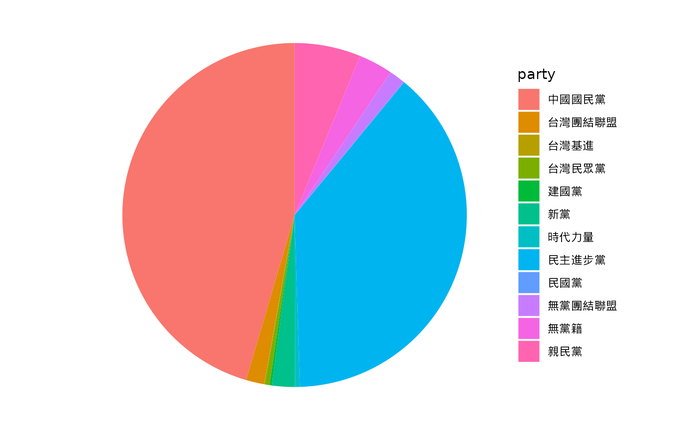
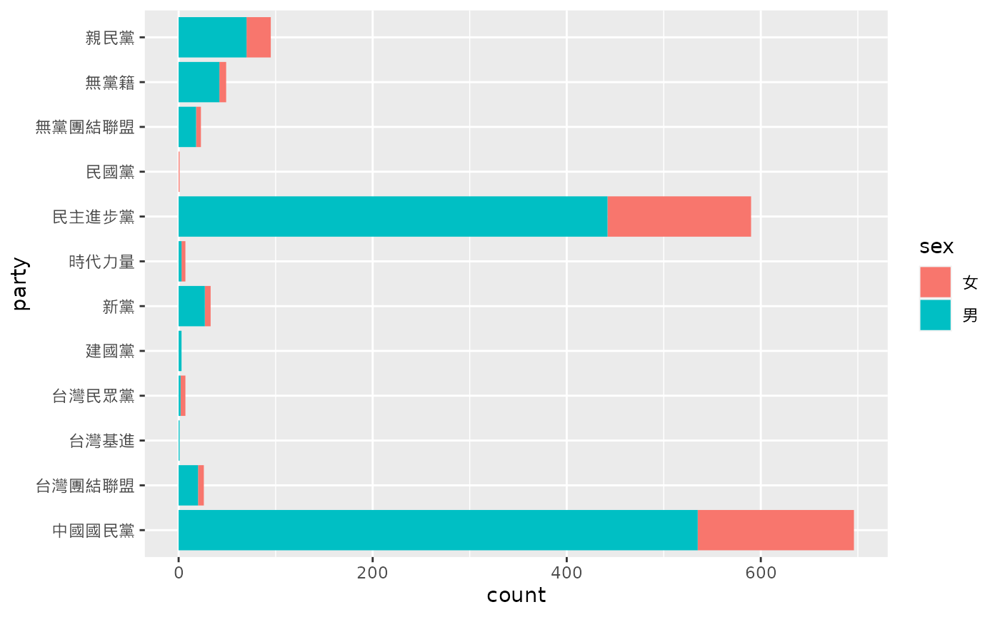

install.packages("devtools")
#>
#> The downloaded binary packages are in
#> /var/folders/5n/clfp8vwj01bcy2hpncvffm0r0000gn/T//RtmpH7AWjs/downloaded_packages
library(devtools)
#> Loading required package: usethis
install_github('davidycliao/legisTaiwan')
#> Skipping install of 'legisTaiwan' from a github remote, the SHA1 (05a5cb4d) has not changed since last install.
#> Use `force = TRUE` to force installation
library(legisTaiwan)
#> ## legisTaiwan ###
#> ## An R package connecting to the Taiwan Legislative API. ###以立委質詢（Questions Answered by the Executives）為例
找出立委在第八屆會期質詢當中，包含「中國」字眼之質詢。
library(stringr)
question_8 <- get_parlquestions(term = 8)
#> Retrieved URL:
#> https://data.ly.gov.tw/odw/ID6Action.action?term=08&sessionPeriod=&sessionTimes=&item=&fileType=json
#> Retrieved Term: 8
#> Retrieved Num: 4717
Q8_data <- question_8$data
Q8_China <- Q8_data[str_detect(Q8_data[["item"]], "中國", negate = FALSE),]計算某位立法委員一共提出幾次有關「中國」字眼之質詢
cat("李應元", sum(stringr::str_count(Q8_China$item, pattern = "本院李委員應元")), "\n")
#> 李應元 28
cat("丁守中", sum(stringr::str_count(Q8_China$item, pattern = "本院丁委員守中")), "\n")
#> 丁守中 18
cat("陳其邁", sum(stringr::str_count(Q8_China$item, pattern = "本院陳委員其邁")), "\n")
#> 陳其邁 8李應元立員提出幾次有提到中國字眼之質詢
Q8_China_li <- Q8_China[str_detect(Q8_China[["item"]], "本院李委員應元", negate = FALSE),]
Q8_China_li[c("item")]
#> # A tibble: 28 × 1
#> item
#> <chr>
#> 1 "二十四、本院李委員應元，針對連任成功後的馬英九總統，新內閣的布局大致…
#> 2 "二十八、本院李委員應元，針對農曆春節前有中國觀光客在香港地鐵上飲食，…
#> 3 "三十五、本院李委員應元，針對馬英九勝選之後，認為解決台灣經濟只有二大…
#> 4 "四十三、本院李委員應元，針對這次的總統大選過程中，中國與美國各自基於…
#> 5 "四十七、本院李委員應元，針對媒體報導，日前國軍退役上將夏瀛洲在中國西…
#> 6 "四十八、本院李委員應元，針對媒體報導日前國軍退役上將夏瀛洲在中國西安…
#> 7 "四十九、本院李委員應元，針對總統大選後，中國國台辦副主任、海協會副會…
#> 8 "五十一、本院李委員應元，針對馬政府對防禦軍購向來口是心非、態度消極，…
#> 9 "三十一、本院李委員應元，針對台灣面對中國不僅不可忽視其存在，也必須與…
#> 10 "一一四、本院李委員應元，針對中國國民黨榮譽主席吳伯雄在中國與胡錦濤見…
#> # … with 18 more rows丁守中立員提出幾次有提到中國字眼之質詢
Q8_China_Ding <- Q8_China[str_detect(Q8_China[["item"]], "本院丁委員守中", negate = FALSE),]
Q8_China_Ding[c("item")]
#> # A tibble: 18 × 1
#> item
#> <chr>
#> 1 三十一、本院丁委員守中，鑑於我國產業主要競爭對手韓國與美國、歐盟簽署之…
#> 2 十一、本院丁委員守中，針就財政部統計處近日公布我國8月份貿易統計資料，…
#> 3 五、本院丁委員守中，鑑於招收大陸學生對很多國內大專院校而言，係為了解決…
#> 4 五、本院丁委員守中，針就ECFA早期收穫實施一年來，我國出口到大陸的貨品金…
#> 5 三十三、本院丁委員守中，針對大陸中國工程院士李蘭娟發表研究資料，有關H7…
#> 6 四十、本院丁委員守中，針就被國際自然保育聯盟列為瀕危物種的食蛇龜，經追…
#> 7 八、本院丁委員守中，經查發現自2010年開放科技計劃調查台灣手機資費為全球…
#> 8 十七、本院丁委員守中，針就中醫乃中華文化的國粹，有48%國人生病時曾接受…
#> 9 十三、本院丁委員守中，因中國手機品牌「小米」一改以往僅以網路銷售平台，…
#> 10 十四、本院丁委員守中，因國內創新產業若要健全發展，智慧財產權之保護至關…
#> 11 十七、本院丁委員守中，針就中國大陸所提出的「一帶一路」經濟戰略，橫跨歐…
#> 12 七十二、本院丁委員守中，因劣質「電子菸」逐漸入侵台灣，導致即使國內吸菸…
#> 13 五、本院丁委員守中，因台灣市場規模相對較小，許多新創產業應「規模經濟」…
#> 14 三十三、本院丁委員守中，針就World Trade Atlas統計資料顯示台灣在中國大…
#> 15 二、本院丁委員守中，針就2016選舉將屆，傳出中國大陸將限縮12月中至1月中…
#> 16 四、本院丁委員守中，針就經濟部標檢局為促進兩岸消費品安全交流，建置有「…
#> 17 七、本院丁委員守中，針就衛福部食藥署規定，產地來自越南、中國、印度、斯…
#> 18 九、本院丁委員守中，針就台灣軟體工程師缺乏，認為據統計軟體工程類的工作…以歷屆委員資料（Legislator Demographics）為例
info <- get_legislators()
#> Retrieved URL:
#> https://data.ly.gov.tw/odw/ID16Action.action?name=&sex=&party=&partyGroup=&areaName=&term==&fileType=json
#> Retrieved term: 2 3 4 5 6 7 8 9 10
legislators <- info$data使用tidyverse協助做資料整理，計算「性別」之個數。
library(tidyverse)
#> ── Attaching packages ───────────────────────────────── tidyverse 1.3.2 ──
#> ✔ ggplot2 3.4.0 ✔ purrr 1.0.1
#> ✔ tibble 3.1.8 ✔ dplyr 1.0.10
#> ✔ tidyr 1.3.0 ✔ forcats 0.5.2
#> ✔ readr 2.1.3
#> ── Conflicts ──────────────────────────────────── tidyverse_conflicts() ──
#> ✖ dplyr::filter() masks stats::filter()
#> ✖ dplyr::lag() masks stats::lag()
legislators %>%
count(sex)
#> # A tibble: 2 × 2
#> sex n
#> <chr> <int>
#> 1 女 368
#> 2 男 1163計算「黨籍」之個數
legislators %>%
count(party)
#> # A tibble: 12 × 2
#> party n
#> <chr> <int>
#> 1 中國國民黨 696
#> 2 台灣團結聯盟 26
#> 3 台灣基進 1
#> 4 台灣民眾黨 7
#> 5 建國黨 3
#> 6 新黨 33
#> 7 時代力量 7
#> 8 民主進步黨 590
#> 9 民國黨 1
#> 10 無黨團結聯盟 23
#> 11 無黨籍 49
#> 12 親民黨 95製作直方圖
library(ggplot2)
party <- legislators %>%
count(party)
ggplot(data = legislators, aes(x = party)) +
geom_bar() +
theme(text = element_text(family = "Heiti TC Light"))
製作圓餅圖
party_1 <- table(legislators$party)
party.freq <- data.frame(party_1)
names(party.freq)[1] <- "party"
ggplot(data = party.freq, aes(x = "", y = Freq, fill = party)) +
geom_bar(stat = "identity", width = 1) +
coord_polar(theta = "y", start = 0) +
theme_void()+
theme(text = element_text(family = "Heiti TC Light"))
查看不同性別於不同政黨中之比例
ggplot(data = legislators, aes(x = party, fill = sex)) +
geom_bar(position = "stack") +
theme(text = element_text(family = "Heiti TC Light")) +
coord_flip()
法律提案（the Records of the Bills）為例，抓取周春米在「民國106年1月20」至「民111年3月10日」所提之法案。
get_bills(start_date = 1060120, end_date = 1110310, proposer = "周春米", verbose = FALSE)
#> $title
#> [1] "the records of bill sponsor and co-sponsor"
#>
#> $query_time
#> [1] "2023-01-28 01:12:18 GMT"
#>
#> $retrieved_number
#> [1] 147
#>
#> $proposer
#> [1] "周春米"
#>
#> $start_date_ad
#> [1] "2017-01-20"
#>
#> $end_date_ad
#> [1] "2022-03-10"
#>
#> $start_date
#> [1] 1060120
#>
#> $end_date
#> [1] 1110310
#>
#> $url
#> [1] "https://www.ly.gov.tw/WebAPI/LegislativeBill.aspx?from=1060120&to=1110310&proposer=周春米&mode=json"
#>
#> $variable_names
#> [1] "date" "term" "sessionPeriod"
#> [4] "sessionTimes" "billName" "billProposer"
#> [7] "billCosignatory" "billStatus" "date_ad"
#>
#> $manual_info
#> [1] "https://www.ly.gov.tw/Pages/List.aspx?nodeid=153"
#>
#> $data
#> # A tibble: 147 × 9
#> date term sessi…¹ sessi…² billN…³ billP…⁴ billC…⁵ billS…⁶ date_ad
#> <chr> <chr> <chr> <chr> <chr> <chr> <chr> <chr> <date>
#> 1 11012… 10 04 15 民法增… 周春米… "蔡易… "" 2021-12-24
#> 2 11012… 10 04 15 民法債… 周春米… "鄭運… "" 2021-12-24
#> 3 11012… 10 04 15 兒童及… 蘇巧慧… "陳秀… "" 2021-12-24
#> 4 11012… 10 04 13 立法院… 伍麗華… "鍾佳… "" 2021-12-10
#> 5 11012… 10 04 13 災害防… 伍麗華… "蔡適… "" 2021-12-10
#> 6 11012… 10 04 13 地方民… 周春米… "吳思… "" 2021-12-10
#> 7 11012… 10 04 13 行政罰… 周春米… "羅美… "" 2021-12-10
#> 8 11012… 10 04 13 私立高… 周春米… "吳思… "" 2021-12-10
#> 9 11012… 10 04 13 勞動基… 周春米… "蔡適… "" 2021-12-10
#> 10 11012… 10 04 13 中華民… 周春米… "蔡適… "" 2021-12-10
#> # … with 137 more rows, and abbreviated variable names ¹sessionPeriod,
#> # ²sessionTimes, ³billName, ⁴billProposer, ⁵billCosignatory,
#> # ⁶billStatus抓取莊瑞雄在「民國106年1月20」至「民111年3月10日」所提之法案。
get_bills(start_date = 1060120, end_date = 1110310, proposer = "莊瑞雄", verbose = FALSE)
#> $title
#> [1] "the records of bill sponsor and co-sponsor"
#>
#> $query_time
#> [1] "2023-01-28 01:12:20 GMT"
#>
#> $retrieved_number
#> [1] 528
#>
#> $proposer
#> [1] "莊瑞雄"
#>
#> $start_date_ad
#> [1] "2017-01-20"
#>
#> $end_date_ad
#> [1] "2022-03-10"
#>
#> $start_date
#> [1] 1060120
#>
#> $end_date
#> [1] 1110310
#>
#> $url
#> [1] "https://www.ly.gov.tw/WebAPI/LegislativeBill.aspx?from=1060120&to=1110310&proposer=莊瑞雄&mode=json"
#>
#> $variable_names
#> [1] "date" "term" "sessionPeriod"
#> [4] "sessionTimes" "billName" "billProposer"
#> [7] "billCosignatory" "billStatus" "date_ad"
#>
#> $manual_info
#> [1] "https://www.ly.gov.tw/Pages/List.aspx?nodeid=153"
#>
#> $data
#> # A tibble: 528 × 9
#> date term sessi…¹ sessi…² billN…³ billP…⁴ billC…⁵ billS…⁶ date_ad
#> <chr> <chr> <chr> <chr> <chr> <chr> <chr> <chr> <date>
#> 1 11012… 10 04 15 性別工… 莊瑞雄… "羅致… "" 2021-12-24
#> 2 11012… 10 04 15 產業創… 賴瑞隆… "王美… "" 2021-12-24
#> 3 11012… 10 04 15 兒童及… 蘇巧慧… "陳秀… "" 2021-12-24
#> 4 11012… 10 04 15 民法親… 范雲 ;… "王美… "" 2021-12-24
#> 5 11012… 10 04 15 產業創… 林宜瑾… "吳秉… "" 2021-12-24
#> 6 11012… 10 04 15 產業創… 蔡易餘… "吳秉… "" 2021-12-24
#> 7 11012… 10 04 15 大學法… 賴品妤… "周春… "" 2021-12-24
#> 8 11012… 10 04 15 地方民… 許智傑… "高嘉… "" 2021-12-24
#> 9 11012… 10 04 15 中華民… 許智傑… "高嘉… "" 2021-12-24
#> 10 11012… 10 04 15 中華民… 許智傑… "高嘉… "" 2021-12-24
#> # … with 518 more rows, and abbreviated variable names ¹sessionPeriod,
#> # ²sessionTimes, ³billName, ⁴billProposer, ⁵billCosignatory,
#> # ⁶billStatus看看「民國106年1月20日」與「民國107年3月10日」之間，有提到「原住民」的法案
bills_data <- get_bills(start_date = 1060120, end_date = 1070310, verbose = FALSE)
bills <- bills_data$data
bills[str_detect(bills$billName, "原住民", negate = FALSE), ]
#> # A tibble: 17 × 9
#> date term sessi…¹ sessi…² billN…³ billP…⁴ billC…⁵ billS…⁶ date_ad
#> <chr> <chr> <chr> <chr> <chr> <chr> <chr> <chr> <date>
#> 1 10612… 09 04 14 原住民… 張宏陸… "趙天… "" 2017-12-22
#> 2 10612… 09 04 13 原住民… 邱志偉… "陳明… "" 2017-12-15
#> 3 10610… 09 04 05 原住民… 蕭美琴… "何欣… "" 2017-10-20
#> 4 10610… 09 04 04 原住民… Kolas … "鍾佳… "" 2017-10-13
#> 5 10610… 09 04 03 原住民… Kolas … "吳焜… "" 2017-10-06
#> 6 10609… 09 04 01 原住民… 林俊憲 "林淑… "" 2017-09-22
#> 7 10609… 09 04 01 原住民… 行政院 "廖國… "" 2017-09-22
#> 8 10605… 09 03 14 原住民… 陳瑩 ;… "江永… "" 2017-05-19
#> 9 10605… 09 03 12 原住民… 蘇巧慧… "陳賴… "" 2017-05-05
#> 10 10604… 09 03 09 原住民… Kolas … "李俊… "" 2017-04-14
#> 11 10603… 09 03 06 原住民… 鄭天財… "林德… "" 2017-03-24
#> 12 10603… 09 03 05 原住民… 孔文吉 "許毓… "" 2017-03-17
#> 13 10603… 09 03 05 原住民… 簡東明 "陳雪… "" 2017-03-17
#> 14 10603… 09 03 05 原住民… 簡東明 "孔文… "" 2017-03-17
#> 15 10603… 09 03 04 原住民… 廖國棟… "曾銘… "" 2017-03-10
#> 16 10603… 09 03 04 原住民… 時代力… "馬文… "" 2017-03-10
#> 17 10602… 09 03 01 財團法… Kolas … "蔡易… "" 2017-02-17
#> # … with abbreviated variable names ¹sessionPeriod, ²sessionTimes,
#> # ³billName, ⁴billProposer, ⁵billCosignatory, ⁶billStatus